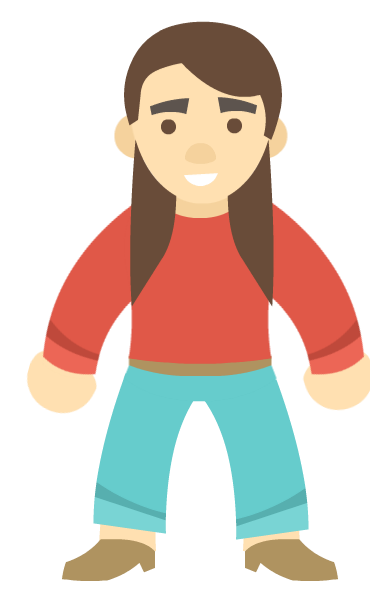

04TAKIM SALONUDEPARTMAN 2
Gönüllü Kulüp Asistanı
Otomatik talimat üretir. Vardiya açarsan sen yokken de AP toplar.
Enerji bekliyorKulüp hazırlanıyor…

04TAKIM SALONUOtomatik talimat üretir. Vardiya açarsan sen yokken de AP toplar.
Enerji bekliyorTalimatlar burada AP’ye dönüşür. Bloklar AP kazancını artırır.
Enerji bekliyorGünlük ve çevrimdışı AP kazancını artırır.
Enerji bekliyorMaç öncesi öneriler sunar, oyuncu geliştirmeyi ucuzlatır.
Enerji bekliyorKampa göndereceğin oyuncuyu seç.
Bu pozisyonda yedek oyuncu yok.
Son beş maç tamamlandı.
Sezon sonuçları aşağıda.| # | Takım | O | G | M | P |
|---|
Galibiyet: 3 puan. Mağlubiyet: 0 puan. Eşitlik sırası: galibiyet, sayı farkı, atılan sayı. Hepsi eşitse sıra paylaşılır.